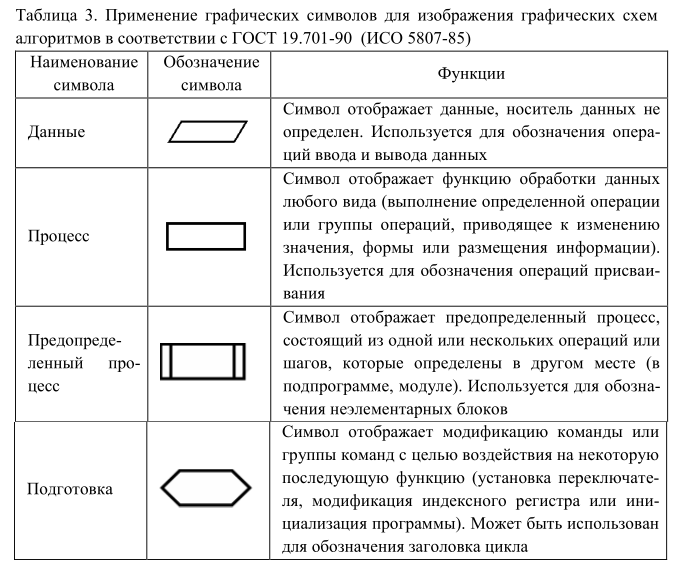
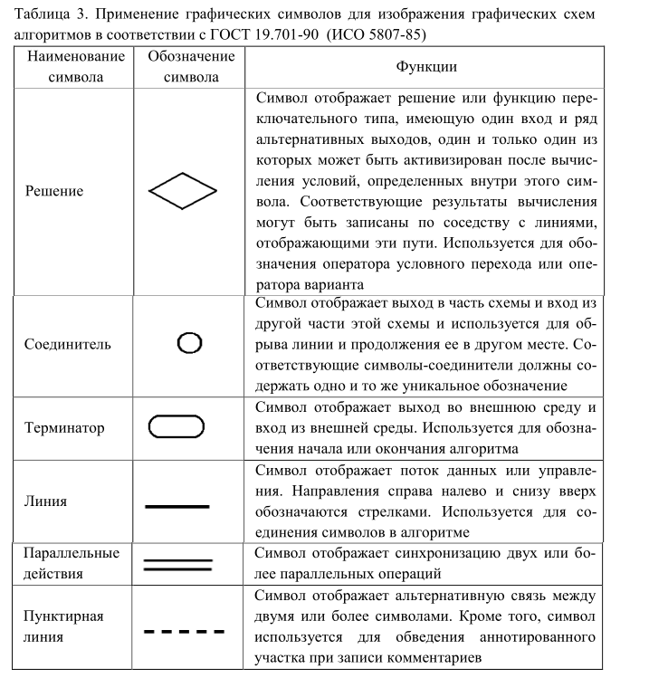
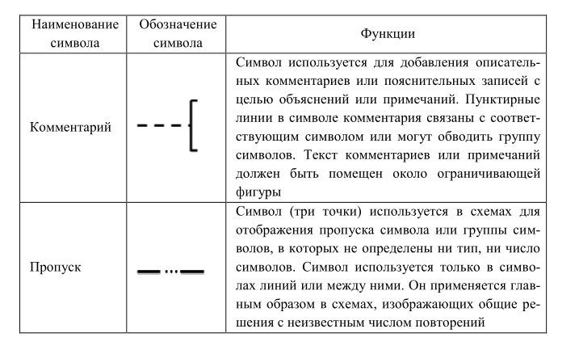

|
Наиболее известны следующие способы
представления алгоритмов:
– на естественном языке (словесное описание);
– на псевдокоде, например на школьном алгоритмическом языке
(АЯ);
– в виде графической схемы алгоритма (блок-схемы);
– в виде N-S диаграммы (структурограмма, диаграмма
Насси-Шнейдермана, структурная блок-схема) [19];
– на языке программирования (в виде программы).
Алгоритмический язык
Способ записи алгоритмов, в котором используются предложения
естественного и математического языков, называется псевдокодом.
Алгоритмический язык – это набор символов, соглашений и правил
для записи алгоритмов.
В качестве набора символов можно использовать любые известные
исполнителю символы.
Соглашения и правила записи алгоритмов. Для
записи алгоритмов используются служебные слова. Их назначение,
смысл и способ применения строго определены.
Служебные слова в тексте алгоритма выделяют каким-либо способом,
обычно подчеркиванием.
1. Минимально
необходимый набор служебных слов:
алг (алгоритм) –
указывает заголовок алгоритма;
дано указывает на
исходные данные и условия применимости алгоритма;
надо указывает на
выходные данные (цель исполнения алгоритма);
нач (начало) –
указывает начало тела алгоритма;
кон (конец) –
указывает конец алгоритма.
2. Комбинации служебных слов:
если то иначе все;
пока нц кц;
выполнять до;
для от до шаг нц кц
используются для записи управляющих структур. Подробно они будут
описаны
в разделе «Основные управляющие структуры».
3. Общий вид алгоритма:
алг ИМЯ_(аргументы, результаты)
дано условия применимости алгоритма
надо цель исполнения алгоритма
нач
команда или управляющая структура №1
команда или управляющая структура №2
…
команда или управляющая структура №N
кон
Графические схемы
алгоритмов
Графическая схема алгоритма представляется в соответствии с ГОСТ
19.701-90 «Схемы алгоритмов, программ, данных и систем. Условные
обозначения и правила выполнения» (разработанный методом прямого
применения международного стандарта ИСО 5807-85 «Обработка
информации. Символы и условные обозначения блок-схем данных,
программ и систем, схем программных сетей и системных
ресурсов»).
Для построения графической схемы алгоритма
используют блоки (имеющие свое наименование и обозначение) и
управляющие структуры, состоящие из этих блоков. Минимальный
набор графических символов, необходимый для проектирования и
анализа алгоритмов, приведен в табл. 3.
Любая управляющая
структура имеет один вход и один выход.
Алгоритм, построенный из таких структур,
называется структурированным.
Структурное кодирование
– это метод разработки алгоритмов, основанный на использовании
управляющих структур: следование, ветвление, цикл. Правильность
любой структуры легко проанализировать и установить. При этом
одни управляющие структуры могут быть вложены в другие.



|